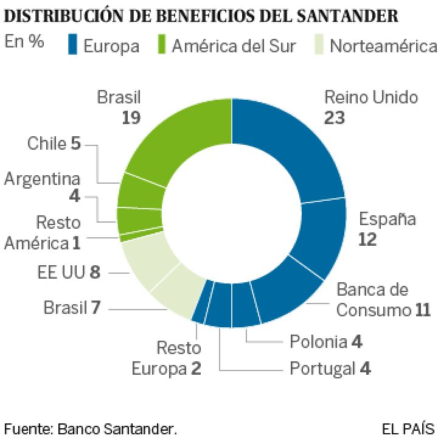

Los beneficios del Santander son el resultado de muchos efectos, a veces contradictorios, ya que tiene una presencia relevante en nueve países, algunos de economías emergentes y otros de zonas desarrolladas. Eso, entre otros efectos contables, permite al banco recuperar provisiones en algunos países ante la caída generalizada de la morosidad (excepto en Brasil), al tiempo que debe incrementarlas en otros.
A lo largo de 2015, la mayor parte de los extraordinarios positivos se apuntaron en la primera mitad del año y gran parte de los negativos, al final. De ahí que el resultado neto del último trimestre del año sea de solo 25 millones, con una caída del 98% sobre el mismo periodo de 2014.
El Santander sufre el bajón de la economía brasileña, “que seguirá con problemas este año y el que viene”, admitió Botín, mientras se beneficia del tirón de Reino Unido. En este país ganó 1.971 millones, un 26,6% más, lo que supone 1.000 millones más que en España (obtuvo 977 millones, un 18,2% más) y 300 millones más que en Brasil, donde logró 1.631 millones (un 13,5% más).
Botín dedicó buena parte de la presentación a defender que pese a que Brasil atravesará un túnel económico, el banco saldrá airoso porque está reduciendo los créditos “para bajar los riesgos”. “Cumpliremos los objetivos de crecimiento y subiremos el beneficio en moneda local, en reales”, aseguró. Otra cosa será lo que ocurra cuando el banco los cambie a euros. Además de la caída en Bolsa en 2014, el Santander ha perdido un 12,5% en lo que va de enero. “Todo el castigo es por Brasil”, insistió Botín, “la situación política influye muy poco”
En España, al igual que en otros países, los resultados del Santander se han logrado por las menores provisiones y la reducción de costes. “La competencia en los créditos y los bajos tipos de interés han golpeado los márgenes”, admitió José Antonio Álvarez, consejero delegado. Solo la reducción de las dotaciones en un 43% permitió que el beneficio de España subiera un 18%. El objetivo del banco ahora es centrarse en las pymes, así como en los clientes vinculados, que son los más rentables porque tienen varios productos, y en los digitales. Estos dos últimos objetivos se extienden a todos los países donde están presentes.
El beneficio del Santander crece un 2,6% en 2015 hasta 5.966 millones En España el crédito cayó un 3% por la menor contratación de las Administraciones Públicas, que se financian con el paraguas del Estado, y las menores hipotecas. Con la nueva cuenta 1,2,3 ha captado 237.000 clientes de otras entidades y ya cuentan con 860.000 usuarios, de los que 50.000 son pymes. Ana Botín comentó, en tono jocoso, que, hasta ahora, ella no había domiciliado todos los recibos en el Santander, por lo que no tenía el producto 1,2,3 completo. La presidenta dijo que esperaba cumplir todas las condiciones pronto y recibir la acción de regalo.
Botín no quiso entrar en la polémica entre el Banco de España y el Ministerio de Economía sobre un nuevo modelo de supervisión. “Puede ser el que se propone u otro diferente porque todos ellos son viables y elevan la transparencia en la gestión”, comentó. Tampoco opinó sobre las palabras de Miguel Fernández Ordóñez, exgobernador del Banco de España, que afirmó que la mala actuación del PP elevó el coste del rescate de Bankia. “No comment sobre ese asunto”, dijo. Tampoco concretó cuál iba a ser la inversión de la entidad en tecnología, uno de los grandes retos de la entidad.